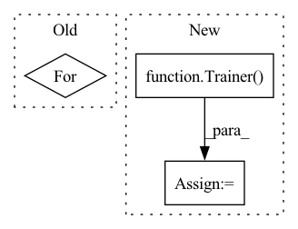

Pattern ID :32085
Before Change
data, mask = data.to(device=device), mask.to(device=device)
targets = []
for item in bboxes:
target = {
"boxes": item[0].to(dtype=torch.float, device=device),
"labels": torch.tensor(item[1]).to(device=device)
}After Change
scheduler = torch.optim.lr_scheduler.StepLR(optim, config["training"]["lr_drop"])
// Build trainer and start training
trainer = Trainer(
train_loader, val_loader, model, criterion, optim, scheduler, device, config
)
trainer.run()
if __name__ == "__main__":In pattern: SUPERPATTERN
Frequency: 3
Non-data size: 3
Instances Fragment ID: 94003661
Project Name: bwittmann/transoar
Commit Name: fbe1515fe14ebf81c18bcf86c27bd7cb4ac79e7e
Time: 2021-11-22
Author: bastian.wittmann@tum.de
File Name: scripts/train.py
M Class Name: AnonimousClass
N Class Name: AnonimousClass
M Method Name: train(1)
N Method Name: train(1)
M Parent Class:
N Parent Class:
M File Name: scripts/train.py
N File Name: scripts/train.py
M Start Line: 15
M End Line: 42
N Start Line: 15
N End Line: 41
Before Change
model.set_data_src(data)
for _ in tqdm(range(num_train_steps - model.steps), mininterval=10., desc=f"{name}<{data}>"):
retry_call(model.train, tries=3, exceptions=NanException)
if _ % 50 == 0:
model.print_log()
After Change
return
if generate_interpolation:
model = Trainer(**model_args)
model.load(load_from)
samples_name = timestamped_filename()
model.generate_interpolation(samples_name, num_image_tiles, save_frames = save_frames)
print(f"interpolation generated at {results_dir}/{name}/{samples_name}") Fragment ID: 94003666
Project Name: lucidrains/stylegan2-pytorch
Commit Name: d0bab1360d59ed7a5930c4ba82f8781753ee0ccb
Time: 2020-09-23
Author: lucidrains@gmail.com
File Name: stylegan2_pytorch/cli.py
M Class Name: AnonimousClass
N Class Name: AnonimousClass
M Method Name: train_from_folder(32)
N Method Name: train_from_folder(32)
M Parent Class:
N Parent Class:
M File Name: stylegan2_pytorch/cli.py
N File Name: stylegan2_pytorch/cli.py
M Start Line: 49
M End Line: 103
N Start Line: 98
N End Line: 149
Before Change
dataset = TensorDataset(x, y)
loader = DataLoader(dataset, batch_size=batch_size, shuffle=True)
for _ in range(max_epochs):
self.fit_step(loader)
def fit_step(self, loader):
Trains model for one epoch.After Change
dataset = TensorDataset(x, y)
loader = DataLoader(dataset, batch_size=batch_size, shuffle=True)
trainer = Trainer(max_epochs=max_epochs)
trainer.fit(self, loader)
def training_step(self, batch, batch_idx):
Trains model for one step. Fragment ID: 94003667
Project Name: rose-stl-lab/torchts
Commit Name: 4ffad7765c0fe2161c1ff7d46ac763ae44249b2d
Time: 2021-04-30
Author: lane.kevin.a@gmail.com
File Name: torchts/nn/model.py
M Class Name: TimeSeriesModel
N Class Name: TimeSeriesModel
M Method Name: fit(5)
N Method Name: fit(5)
M Parent Class: LightningModule
N Parent Class: ABC,nn.Module
M File Name: torchts/nn/model.py
N File Name: torchts/nn/model.py
M Start Line: 36
M End Line: 45
N Start Line: 36
N End Line: 37